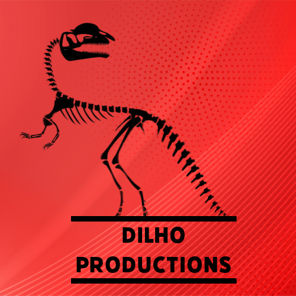
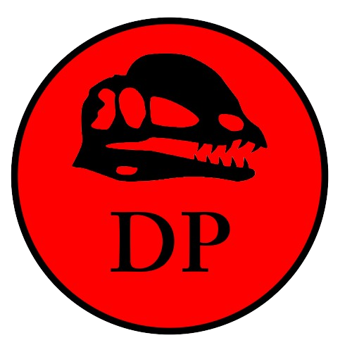

Introdução: A Dilho Pruductions é um grupo de 1 DEV dedicado a criar mods para o jogo
Path of Titans, de criaturas terrestres, voadoras e matritimas com habilidades únicas para
inovar a gameplay dos jogadores


Carnívoros
Link do Trello: https://trello.com/b/h18YAVDH/dilho-pruductions-pot-mods